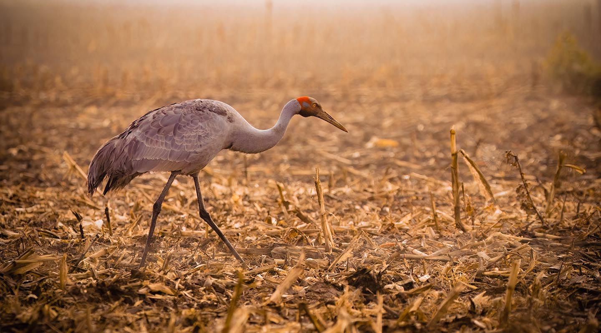
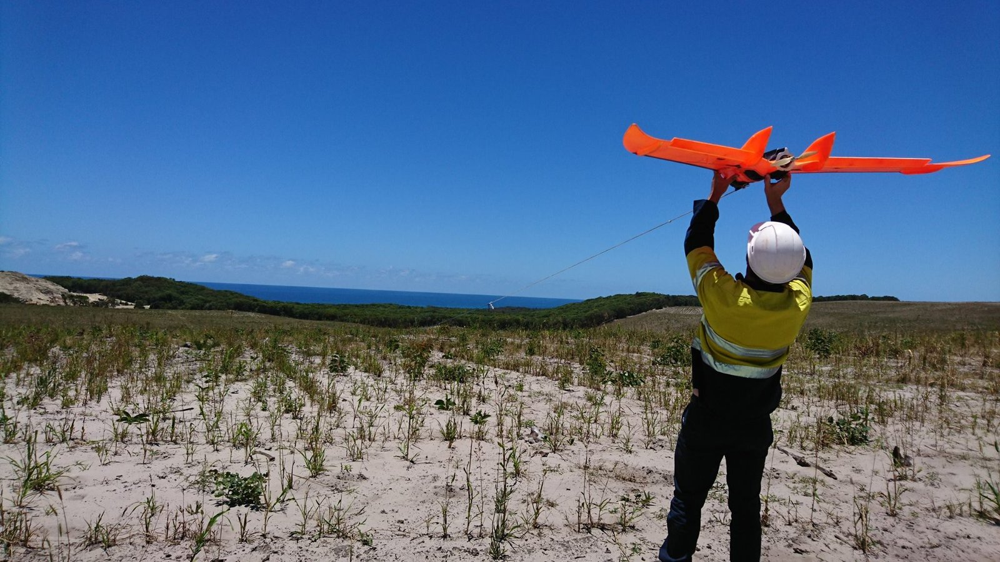
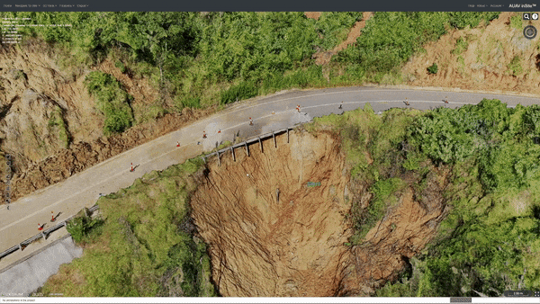

Western Victoria Wetlands -- Brolga Impact Surveys
EH Partners
Habitat & Brolga Nesting Site Monitoring
Managed project services conducting habitat and Brolga nesting site monitoring for EHP. Each year surveyed over 1,500 wetlands across the Victorian Western District for windfarm impact assessment, delivering comprehensive ecological datasets to inform development approvals and conservation management.
Geotagged video capture across all survey sites with online digital twin delivery, providing clients and stakeholders with a spatially accurate, repeatable monitoring record across seasons.
Italian Buckthorn AI Detection & Prescriptive Spray Control
GHCMA -- Glenelg Hopkins Catchment Management Authority.jpg)
AI Species Detection & Prescriptive Spray Control
Italian Buckthorn (Rhamnus alaternus) has invaded southeastern Australia's coastline, but closely resembles native vegetation — making ground-based identification risky and difficult. Personnel couldn't safely access infested terrain on foot, and conventional herbicide application risked harming non-target native plants.
I led the end-to-end drone workflow: captured detailed ground-truth documentation of target and non-target species, then collected multispectral data across five light spectrums (RGB, NIR, Red Edge, Green, Blue) using a DJI Mavic 3 Multispectral. Multiple ground sampling densities were tested to balance accuracy and cost-effectiveness, generating up to 10 distinct analytical outputs per dataset.
The validated detection data was then converted into prescriptive spray flight plans for a DJI AGRAS T50 precision spraying drone — enabling targeted herbicide application to individual plants and clusters without impacting surrounding native habitat.
Detection accuracy: Italian Buckthorn 97% // Slashed Juvenile Gorse 85% // Cape Wattle 100%
Survival, Stem Count, Biomass & Carbon
One Forty One // HVP // ABG // Green Triangle
Plantation Forestry Analysis Platform
Survival and stem count analysis, biomass estimation, and carbon accounting across plantation forestry operations. Fixed-wing and multirotor surveys deployed with multispectral and NDVI analysis to assess tree health, stocking rates, and growth performance across large-scale forestry estates.
Built and operated a custom ArduPilot ForestMapper platform, accumulating over 1,000 hours of production flight time. This purpose-built fixed-wing system was designed specifically for the demands of forestry survey -- long endurance, consistent altitude hold, and reliable multispectral payload integration over dense canopy environments.
Road & Construction Monitoring
Geovert // John Holland // VicRoads // Regional Roads Victoria
Infrastructure Survey & Progress Monitoring
Comprehensive road and construction monitoring programs across regional Victoria, delivering 3D as-built models, geolocated footage, progress inspections, and traffic monitoring datasets for state and local government clients.
Key Projects
Great Ocean Road Stability Works -- Geovert
10mm GSD 3D as-built survey of slope stability works along the Great Ocean Road, providing high-fidelity models for engineering validation and compliance reporting.
Barwon Prison Dilapidation Survey
Aerial dilapidation survey capturing building condition data across the Barwon Prison facility for maintenance planning and asset management.
Harrietville to Mt Hotham -- VicRoads
Geolocated footage capture along the Harrietville to Mt Hotham road corridor for condition assessment and planning documentation.
Goulburn Valley Highway -- Regional Roads Victoria
Construction progress inspections for highway upgrade works, providing regular aerial monitoring and volumetric reporting.
Lake Entrance Traffic Monitoring (2019--2021)
Multi-year traffic monitoring program using aerial observation to capture vehicle flow data, congestion patterns, and seasonal traffic variations for transport planning.